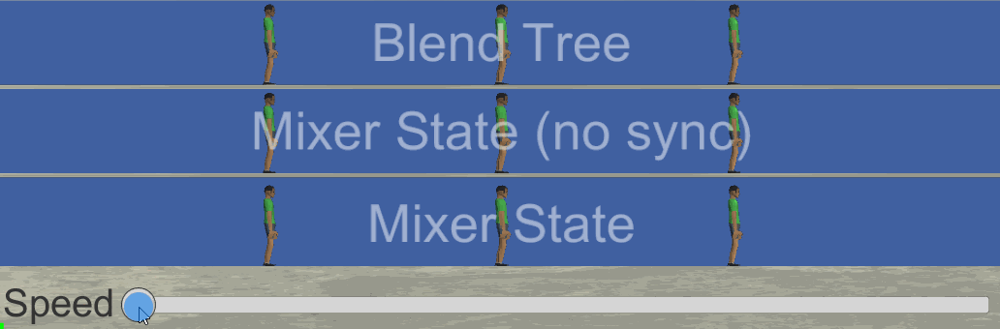

Pro-Only: Animancer Lite allows you to try out this feature in the Unity Editor, but it will not be available in runtime builds unless you purchase Animancer Pro.
Mixers serve the same purpose as Mecanim Blend Trees; they allow you to blend multiple animations based on a parameter (see below for their differences). For example, you might blend between Idle, Walk, and Run based on how fast you want the character to move (such as in proportion to how far the user tilts a joystick) so that they animate appropriately for any speed instead of only having a few specific speeds they can move at.
The Linear Blending example demonstrates how to use Mixers and Blend Trees.

Mixers are usually set up in the Inspector using Mixer Transitions, but they can also be Created Manually.

Choosing a Mixer
There are several different mixer types and you can create your own by inheriting from any of them:
| Mixer Type | Parameter / Thresholds | Interpolation Algorithm | Equivalent Blend Tree |
|---|---|---|---|
ManualMixerState |
none | Manual Weights | Direct |
LinearMixerState |
float |
Linear O(n) |
1D |
CartesianMixerState |
Vector2 |
Gradient Band O(n2) |
2D Freeform Cartesian |
DirectionalMixerState |
Vector2 |
Polar Gradient Band O(n2) |
2D Freeform Directional |
ManualMixerStates allow you to simply control the AnimancerNode.Weight of each state manually without any automated calculations. This is often useful for additive animations and blend shapes for things like facial expressions.
Other mixers have a Parameter property and Thresholds array which are used to calculate the weight of each state for you. When the Parameter is exactly equal to a particular threshold, the corresponding state will be at exactly 1 weight, while Parameter values between the Thresholds will calculate fractional weights based on the interpolation algorithm being used. You can either specify the thresholds manually or provide a custom calculation Delegate to MixerState<T>.CalculateThresholds. For Vector2 based mixers (Cartesian and Directional) you can also use the AnimancerUtilities.CalculateThresholdsFromAverageVelocityXZ extension method.
When selecting a 2D mixer, Directional generally offers better interpolation than Cartesian for animations that represent direction such as move forward/back/left/right. Also note that in areas with 180 degrees or more between states the interpolation is ill-defined and will likely have undesirable results; I.E. if you have clips for forward, back, and left, but no right, then you will get odd results if you set the parameter to the right.
MixerStates are a type of AnimancerState with several other differences from regular ClipStates:
- The
Clipproperty will always return null. - States inside an
MixerStateare not generally registered in the internal Dictionary. If you need to access these states directly you must do so via their index in the mixer itself. All inbuilt mixers expose theirStatesas an array.
Manual Creation
If you do not want to use a Mixer Transition, you can create one yourself using code:
- Select a mixer type from the table above and make a
newone. For example,new LinearMixerState. - Call one of the
Initializemethods on the mixer:
Initialize(portCount)allocates room for the specified number of states which can be filled individually usingCreateChildor by passing the mixer into the constructor orSetParentmethod of any state type. This even lets you nest mixers inside each other.Initialize(clips, thresholds)allocates aClipStatefor each of theclipsand assigns their correspondingthresholds.
- Make sure all states have been assigned thresholds to determine the parameter values where they will be used and how they will blend in relation to other states. This can be done using optional parameters in the
InitializeandCreateChildmethods, or by callingSetThresholdorSetThresholds. - Optionally call
SetDebugNameto give it a more descriptive display name to show in the Inspector. - Store a reference to the mixer so you can set its
Parameterlater on to control its blending.
The following example script uses a LinearMixerState to blend between Idle and Run animations based on a Movement Speed slider in the Inspector:
using Animancer;
using UnityEngine;
public sealed class LinearMixerExample : MonoBehaviour
{
[SerializeField] private AnimancerComponent _Animancer;
[SerializeField] private AnimationClip _Idle;
[SerializeField] private AnimationClip _Run;
[SerializeField, Range(0, 1)]
private float _MovementSpeed;
// Keep the mixer after is is created so we can change the Parameter later.
private LinearMixerState _MovementMixer;
private void Awake()
{
// Make a new mixer and connect it to the default layer.
_MovementMixer = new LinearMixerState();
// We could specify custom thresholds in the Initialize call,
// but since we are not it will use 0 and 1 respectively.
// Other overloads take 3 clips, or an array of any number of clips.
_MovementMixer.Initialize(_Idle, _Run);
// In general, synchronization is good for movement so you should disable it for Idle
// and since there is only one other state it will have nothing else to sync with anyway.
// See the Optional Synchronization section for more information.
_MovementMixer.DontSynchronizeChildren();
// Optionally register the mixer with a key so it
// can be accessed from other scripts using that key.
// A string name:
_MovementMixer.Key = "Movement Mixer";
// Would let other scripts call:
// var state = _Animancer["Movement Mixer"];
// _Animancer.Play("Movement Mixer");
// Or use this component itself as the key.
_MovementMixer.Key = this;
// Would let other scripts with a reference to this one access the mixer:
// LinearMixerExample example;
// var state = _Animancer[example];
// _Animancer.Play(example);
// Play the mixer just like a regular clip.
_Animancer.Play(_MovementMixer);
}
private void Update()
{
// Set the mixer's parameter to control its current blending.
_MovementMixer.Parameter = _MovementSpeed;
}
}

Nesting
Mixers can have any type of State as their children, including other mixers:
- Use
mixer.Initialize(childCount)to specify the number of states you want. - Put the mixers you want to nest into the
mixer.Statesarray. - Use
mixer.SetThreshold(or any of the other threshold methods) to specify the parameter values you want them to blend at.
For example, if you have mixers for movement in any direction for both regular movement and for moving while injured, you could put both of those in another mixer to allow you to blend the injury level as well:
using Animancer;
using UnityEngine;
public sealed class NestedMixerExample : MonoBehaviour
{
[SerializeField] private AnimancerComponent _Animancer;
[SerializeField] private MixerTransition2D _RegularMovement;
[SerializeField] private MixerTransition2D _InjuredMovement;
[SerializeField, Range(0, 1)]
private float _InjuryLevel;
[SerializeField, Range(-1, 1)]
private float _MovementX;
[SerializeField, Range(-1, 1)]
private float _MovementY;
private LinearMixerState _MovementMixer;
private void Awake()
{
_MovementMixer = new LinearMixerState();
// Allocate 2 child states.
_MovementMixer.Initialize(2);
// Create Child [0] using the Regular Movement transition with a Threshold of 0.
// Create Child [1] using the Injured Movement transition with a Threshold of 1.
_MovementMixer.CreateChild(0, _RegularMovement, 0);
_MovementMixer.CreateChild(1, _InjuredMovement, 1);
// Optionally give the mixers names to show in the Inspector:
_MovementMixer.SetDebugName("Movement");
_RegularMovement.BaseState.SetDebugName("Regular Movement");
_InjuredMovement.BaseState.SetDebugName("Injured Movement");
_Animancer.Play(_MovementMixer);
}
private void Update()
{
// The _MovementMixer.Parameter corresponds to the Thresholds assigned above:
// 0 = Regular.
// 0.5 = Halfway between Regular and Injured.
// 1 = Injured.
_MovementMixer.Parameter = _InjuryLevel;
var movement = new Vector2(_MovementX, _MovementY);
_RegularMovement.State.Parameter = movement;
_InjuredMovement.State.Parameter = movement;
}
}
Smoothing
Setting the Parameter of a mixer will instantly change its blending, but there are several ways you can do it smoothly over time depending on how you are controlling it.
Variable Target
If the target value can change constantly then you can simply use a MoveTowards function to move the Parameter a certain distance towards the target value every frame. For example, if you are controlling a movement mixer based on player input from a joystick then you might want to limit how quickly the character can snap from one direction to another.
| 1D | 2D |
|---|---|
Mathf.MoveTowards |
Vector2.MoveTowards |
|
|
Fixed Target
If you just want to set the target value for it to move towards on its own, then you can use a MixerParameterTweenFloat (for 1D Mixers) or MixerParameterTweenVector2 (for 2D Mixers):
[SerializeField] private AnimancerComponent _Animancer;
[SerializeField] private LinearMixerTransition _Mixer;
private MixerParameterTweenFloat _MixerTween;
private void Awake()
{
_Animancer.Play(_Mixer);
// Initialize the tween with the Mixer it will control.
_MixerTween = new MixerParameterTweenFloat(_Mixer.State);
}
public void BlendMixerParameter(float parameter, float duration)
{
// Start interpolating the Mixer parameter.
_MixerTween.Start(parameter, duration);
}
That will move the _Mixer.Parameter towards the specified parameter every frame and reach it at the end of the duration. You can call Start again to interrupt the previous target, but if you are doing that very often then the Variable Target approach described above might be more effective.
Blend Trees vs. Mixers
Animancer's Mixers and Mecanim's Blend Trees (which can be played using using Parameter Controller States) serve the same general purpose, however they have significant differences in their implementation:
| Blend Trees | Mixers | |
|---|---|---|
| Creation | Manual in the Unity Editor. | Dynamic at runtime. |
| Modification | Cannot be modified at runtime. | Can be modified freely after creation. |
| Details | You have no access to any of the internal details. | You can directly access the details of individual states. |
| Synchronization | Time and Foot Phase Synchronization, but it is always on for all states. | Time synchronization only and you control which states are synchronized. |
| Customisation | None. | You can create your own mixer types that inherit from any of the existing ones to implement custom blending algorithms or add other features. |
Synchronization
When mixing animations of different lengths, they will get out of sync if left to play normally. For example, it could end up with a Walk animation having the left foot on the ground while the Run animation has the right foot on the ground, which would not give a realistic result when simply interpolating between them. This causes obvious issues as you can see in the video below (adapted from the Linear Blending example) when the speed slider is about 75% to the right and the character is walking fine about half the time while the cycles are close to each other but every few steps he does a strange shuffle that looks very unnatural. The solution to this problem is to synchronize the times of each of the states so that they are always at equivalent poses.

| No Synchronization | Synchronize Walk and Run |
|---|---|
| All animations play independently. | Walk and Run stay at the same NormalizedTime. |
 |
 |
Enabling time synchronization for all states would give a similar result to the Blend Tree.
Optional Synchronization
Synchronization is good for movement but should usually be disabled for Idle animations.
Blend Trees always synchronize their states, however this is not always ideal so Mixers allow you to choose which states are synchronized. The problem can be seen in the Blend Tree character above video when it blends between Idle and Walk (when the slider is anywhere to the left of the center). Since the Idle animation is much longer than Walk, synchronising them causes the Walk to play far slower than it should so the character barely moves at all until the speed gets above 50% and it starts blending Walk and Run instead. The solution is simply to not synchronize the Idle animation because its poses have no correspondance to any particular times during the Walk animation anyway (which is why the Mixer character gives a much better result at low speed).
When using a Mixer Transition, the Sync toggles on the right side of the Inspector allow you to choose which of its states are synchronized.
In code, you can control child synchronization like this:
public static void OptionalSynchronizationExample(MixerState mixer)
{
// By default, all children are synchronized but you can prevent that if you want:
// Note that this only affects children added to a mixer after you set it.
MixerState.AutoSynchronizeChildren = false;
// Disable synchronization for all children.
mixer.DontSynchronizeChildren();
// Or for a specific child.
mixer.DontSynchronize(mixer.GetChild(0));
// Or enable it for a specific child (if you set AutoSynchronizeChildren = false).
mixer.Synchronize(mixer.GetChild(1));
}
Foot Phase Synchronization
Blend Trees also use a more complex synchronization technique for Humanoid animations known as Foot Phase Synchronization which is described in the following video at 17:10. Essentially, each animation is broken down into phases (right foot down, right foot up, etc.) so that it can properly support animations with irregular walk cycles such as a character with a limp and animations that contain different numbers of walk cycles.
It would be possible to implement Foot Phase Synchronization in Mixers (and you could do it yourself by inheriting from any of the existing mixer types), but Unity's implementation is not exposed publically so it would need to be entirely re-implemented from scratch. It would need the AnimationClips to be analysed to determine their phases in the Unity Editor since their curves can't be accessed at runtime and then it would need additional logic to adjust speeds at runtime based on that analysis. This could potentially be added to Animancer in the future, but for now it has been deemed to require far too much effort to achieve something that can already be done using a Blend Tree.
Real Speed
The Synchronization system and Extrapolate Speed feature of LinearMixerStates work by modifying the speed of the internal Playables without changing their AnimancerState.Speed (because they still need to know the base speed they are set to). So the state will show a Real Speed field in the Inspector whenever its internal speed differs from its AnimancerState.Speed.